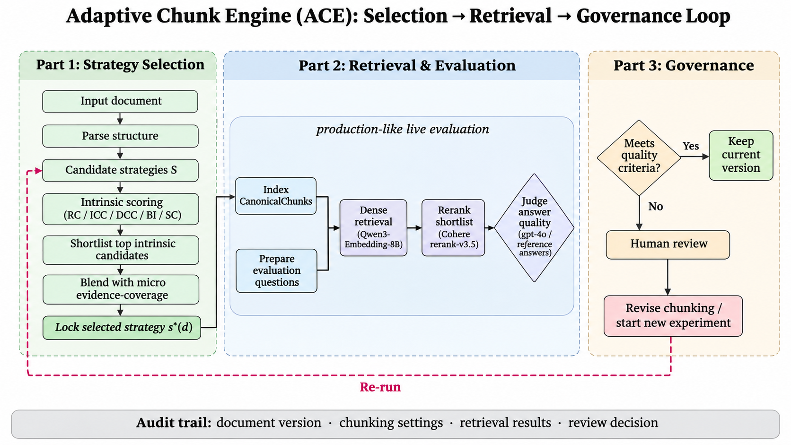
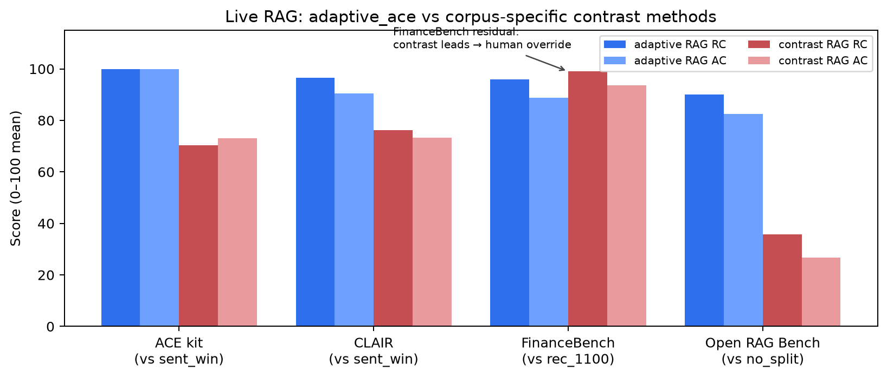
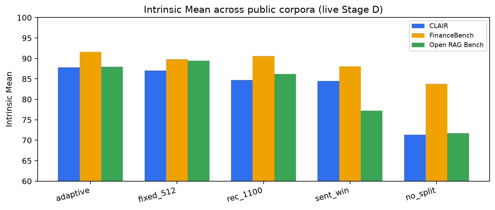

title: "Adaptive Chunk Engine: Governed Per-Document Chunking Selection for Enterprise RAG" venue: "COLING 2027 Industry Track" category: "Emerging / Enabling infrastructure + Deployed Methods & System Evaluation" blind: true page_budget: "6 pages body (+ unlimited refs / ethics / appendix)" revision: "改2 — expands 改1 with additional figures/results/refs; preserves author edits & comments"
Anonymous authors
Paper under double-blind review for COLING 2027 Industry Track
Chunking is a first-order design choice in enterprise Retrieval-Augmented Generation (RAG), yet production systems often rely on a single global splitter. Building on Adaptive Chunking (de Moura et al., 2026), which selects a splitter per document using five intrinsic metrics (RC, ICC, DCC, BI, SC), we present Adaptive Chunk Engine (ACE): an auditable framework for per-document chunking selection in enterprise RAG settings that turns metric-guided selection into a product decision with strategy registries, reproduction manifests, a RAG micro-loop selection objective, dense retrieval with cross-encoder reranking, and a human-triggered optimization gate. Under a production-like stack (Qwen3-Embedding-8B, Cohere rerank-v3.5, rag_microloop, gpt-4o judge), ACE reaches mean RAG completeness/correctness of 100.0 / 100.0 on a controlled kit (43/43 answered; vs. 64.2 / 64.6 without rerank), ranks first on full-CLAIR intrinsic Mean (87.8), and ties best RAG on Open RAG Bench (90.0 / 82.5) while exposing the failure of non-indexable no_split on long PDFs (35.8 / 26.7). We report practitioner lessons: ship dual eval lanes, treat Auto as a proposal, and compare ranks within a protocol.
Enterprise RAG pipelines often fail because documents are segmented with a one-size-fits-all splitter. Adaptive Chunking (de Moura et al., 2026) showed that scoring candidates with document-intrinsic metrics and selecting the winner per document improves RAG on CLAIR. Industry deployment adds auditability, human veto, alignment of the eval lane with production retrieval (dense + rerank), and handling disagreement between intrinsic metrics and RAG feedback (Lewis et al., 2020; Gao et al., 2024).
COLING Industry Track submissions prioritize practical deployment insight over research novelty. ACE is framed as enabling infrastructure for governed chunking selection, including negative/trade-off results when Auto should be overridden.
Contributions for practitioners:
adaptive_ace) with Strategy Registry, CanonicalChunk contracts, ReproductionManifests, and optional RAG micro-loop blending.rag_microloop.RAG systems. Retrieval-augmented generation grounds LLM answers in retrieved evidence (Lewis et al., 2020). Production quality depends as much on how documents are segmented as on the retriever or generator (Gao et al., 2024). Industry evaluations further stress dataset design and protocol honesty when comparing RAG stacks (Teixeira de Lima et al., 2025).
Chunking methods. Classical splitters include fixed-token windows, recursive character/text splitters, heading-aware sections, and sentence windows. Recent industry work proposes LLM-assisted structured chunking (e.g., AutoChunker; Jain et al., 2025). These methods typically commit to one algorithm for all documents.
Adaptive selection. Adaptive Chunking (de Moura et al., 2026) instead scores candidate splitters with five intrinsic metrics and selects a winner per document on CLAIR. ACE productizes that idea for enterprise RAG: registries, manifests, a retrieval-aligned micro-loop, and a human gate when intrinsic ranking disagrees with live RAG.
In multi-tenant RAG platforms, chunking is simultaneously a quality, cost, and compliance lever. Legal, financial, and arXiv-style PDFs respond differently to fixed-token, recursive, heading-aware, sentence-window, and no-split strategies.
ACE targets: per-document adaptivity without retraining; auditability via manifests; human veto when RAG regresses; protocol honesty (offline CI ≠ live neural scores); and retrieval realism (dense top-20 + rerank top-5).
Figure 1 shows the overall workflow of the Adaptive Chunk Engine (ACE), organized into three interconnected stages: strategy selection, retrieval and evaluation, and governance. First, ACE evaluates candidate chunking strategies using five intrinsic metrics (RC, ICC, DCC, BI, and SC). In intrinsic-only mode, the strategy with the highest mean score is selected. In rag_microloop mode, ACE shortlists the top intrinsic candidates and combines their intrinsic mean with a micro evidence-coverage score before locking the selected strategy for the document.
Next, the selected strategy is applied to generate CanonicalChunks, which are indexed for dense retrieval. Evaluation questions are prepared independently and used to assess retrieval performance through dense retrieval, cross-encoder reranking, and LLM-based answer quality judging. Finally, retrieval regressions are routed to a human review process, where practitioners can retain the current version or revise the chunking configuration and initiate a new experiment. This feedback loop makes chunking selection an auditable and human-governed process rather than a fully automated decision.
Figure 1. Adaptive Chunk Engine (ACE): Selection → Retrieval → Governance Loop.

Intrinsic metrics (brief). Following de Moura et al. (2026): RC (retrieval/coverage-oriented completeness of chunks), ICC / DCC (intra-/document coherence proxies under the live embedder), BI (boundary integrity), and SC (structural coverage). Selection maximizes their mean, optionally blended with a micro RAG evidence-coverage term.
Candidates evaluated: fixed_token_{256,512}, recursive_text, recursive_text_1100, sentence_window, heading_section, no_split, and adaptive_ace.
| Protocol | Embeddings / retrieve | Rerank | Judge | Role |
|---|---|---|---|---|
| Offline | Hashed n-grams / lexical | — | Term-coverage | CI / regression |
| Live (primary) | Qwen3-Embedding-8B dense |
Cohere rerank-v3.5 |
gpt-4o |
Production-like |
Score reporting. Unless noted, RAG completeness and correctness are mean scores on a 0–100 scale over answered questions (LLM-judge JSON), not raw question counts. We also report answered fractions (e.g., 43/43). Absolute magnitudes are not transferable across corpora or offline vs live; compare ranks within a protocol.
| Corpus | Scale reported |
|---|---|
| ACE kit | 6 docs · 43 Q |
| CLAIR | Full 33 docs · ≤3 live QA/doc (98 scored) |
| FinanceBench (Islam et al., 2023) | 18 docs · ≤36 Q (33 scored) |
| Open RAG Bench (Vectara, 2024) | 4 docs · ≤40 Q (12 scored) |
We report settings that demonstrate ACE’s industrial advantage and omit non-production no_split “wins” on short markdown as lead claims. Figure 2 summarizes three advantage highlights; Figures 3–6 add stack progression, cross-corpus RAG, selection mix, and intrinsic Means.
Figure 2. ACE-advantage highlights (live stages C/D).
| Stack | Adaptive mean RAG RC/AC | Answered |
|---|---|---|
| Embed-small, no rerank | 64.2 / 64.6 | — |
| + Cohere rerank-v3.5 | 100.0 / 100.0 | 43/43 |
| + Qwen3-Embedding-8B | 100.0 / 100.0 | 43/43 |
| + rag_microloop (primary) | 100.0 / 100.0 | 43/43 |
Figure 4. Kit stack progression (stages A→C): after rerank, adaptive RAG saturates; embedding upgrade and micro-loop preserve the ceiling while improving governance readiness.

Full pre-aggregation intrinsic metrics (stage C):
| Method | RC | ICC | DCC | BI | SC | Mean |
|---|---|---|---|---|---|---|
| adaptive_ace | 100.0 | 53.23 | 96.48 | 100.0 | 100.0 | 89.94 |
| recursive_text | 100.0 | 53.43 | 96.94 | 98.7 | 100.0 | 89.81 |
| recursive_text_1100 | 100.0 | 53.01 | 95.93 | 100.0 | 100.0 | 89.79 |
| fixed_token_512 | 100.0 | 53.64 | 95.06 | 97.66 | 100.0 | 89.27 |
| sentence_window | 58.33 | 61.43 | 83.96 | 21.35 | 60.69 | 57.15 |
With production-like rerank, adaptive saturates kit RAG (mean 100/100; 43/43 answered); sentence_window remains brittle (70.4/73.1; 25/43 answered).
| Method | RC | ICC | DCC | BI | SC | Mean |
|---|---|---|---|---|---|---|
| adaptive_ace | 99.92 | 52.12 | 86.85 | 99.13 | 99.62 | 87.8 |
| fixed_token_512 | 100.0 | 49.06 | 86.65 | 99.55 | 100.0 | 87.05 |
| recursive_text_1100 | 99.96 | 47.24 | 76.72 | 99.72 | 100.0 | 84.73 |
| sentence_window | 97.57 | 54.76 | 91.3 | 90.65 | 88.32 | 84.52 |
| no_split | 100.0 | 53.63 | 100.0 | 100.0 | 3.03 | 71.33 |
| Method | Mean RAG RC | Mean RAG AC | Answered |
|---|---|---|---|
| adaptive_ace | 96.57 | 90.5 | 94/98 |
| recursive_text_1100 | 95.96 | 92.93 | 93/98 |
| sentence_window | 76.26 | 73.23 | 71/98 |
Adaptive leads intrinsic Mean and stays near the top of production-viable RAG; sentence_window lags by ~20 RAG points. (no_split can still inflate short-context RAG by stuffing full documents—treated as a non-indexer baseline, not a shippable strategy.)
| Method | Mean RAG RC | Mean RAG AC | Answered |
|---|---|---|---|
| adaptive_ace | 90.0 | 82.5 | 10/12 |
| fixed_token_512 | 90.0 | 82.5 | 10/12 |
| recursive_text_1100 | 83.33 | 79.17 | 9/12 |
| no_split | 35.83 | 26.66 | 3/12 |
On long arXiv PDFs, naive full-doc context collapses; adaptive ties best production RAG.
| Method | Mean RAG RC | Mean RAG AC | Answered |
|---|---|---|---|
| recursive_text_1100 | 99.07 | 93.52 | 32/33 |
| recursive_text | 96.43 | 91.52 | 31/33 |
| adaptive_ace | 95.83 | 88.89 | 29/33 |
| sentence_window | 86.48 | 76.85 | 27/33 |
Adaptive intrinsic Mean 91.61 (1st) vs recursive_1100 90.64. Live RAG favors larger recursive chunks on this QA mix. This residual gap is exactly why Auto must remain a proposal under human review—not a reason to abandon metric selection. Full RC/ICC/DCC/BI/SC rows are in Appendix A.
Figure 3. Cross-corpus live RAG: adaptive vs a corpus-specific contrast method (sentence_window on kit/CLAIR; recursive_1100 on FinanceBench; no_split on Open RAG Bench).

Under rag_microloop, ACE does not invent a new splitter; it locks a registry strategy per document after blending intrinsic Mean with micro evidence-coverage. Figure 5 shows locked-strategy histograms.
Figure 5. Per-document strategy locks (blend winner among micro-loop shortlist).

On CLAIR, locks concentrate on fixed_token_512 (18/33) with a long tail of recursive/sentence/heading choices. On FinanceBench, locks shift toward recursive_text_1100 (8/18)—consistent with that corpus’s RAG preference—while still diversifying when metrics disagree. This is the product story: adaptivity is a governed mixture of known strategies, not a single global default.
Figure 6. Intrinsic Mean across public corpora.

| Claim | Supported? |
|---|---|
| Adaptivity recovers strong splitters | Yes |
| Rerank needed for production-like dense RAG | Yes (kit 64.2→100.0 mean RC) |
| Brittle sentence windows lose | Yes |
| Long-doc RAG needs chunking (not no_split) | Yes |
| Intrinsic = RAG optimum always | No (FinanceBench residual) |
| ACE locks a diverse strategy mix | Yes (Fig. 5) |
100/100 as question counts.no_split as an indexer for long documents.ACE extends Adaptive Chunking into an auditable framework for per-document chunking selection, combining intrinsic metric-based selection, production-aligned retrieval evaluation, and human-triggered governance. Intrinsic evidence favors adaptive_ace, rerank repairs live dense RAG, and long-document benchmarks expose why governed chunking beats naive full-doc context—while residual disagreements motivate human-triggered optimization.
Live QA is capped per document under API cost controls; FinanceBench/ORB subsets are expanded beyond smoke but not exhaustive. Offline lexical RAG is a CI proxy. LLM-as-judge introduces variance. Absolute scores must not be compared across protocols. Large-scale multi-tenant telemetry is out of scope for this Emerging submission.
ACE evaluates document chunking for RAG. Benchmark subsets may contain sensitive corporate/regulatory text; we use published adapters. Live evaluations call third-party APIs; operators must ensure contractual compliance and PII scrubbing. Human override is intentional for regulated workflows.
de Moura Junior, P. R., Lelong, J., and Blangero, A. 2026. Adaptive Chunking: Optimizing Chunking-Method Selection for RAG. In Proceedings of LREC 2026.
Teixeira de Lima, R., Gupta, S., Berrospi, C., Mishra, L., Dolfi, M., Staar, P., and Vagenas, P. 2025. Know Your RAG: Dataset Taxonomy and Generation Strategies for Evaluating RAG Systems. In Proceedings of COLING 2025: Industry Track, pages 39–57.
Gao, Y., Xiong, Y., Gao, X., Jia, K., Pan, J., Bi, Y., Dai, Y., Sun, J., Wang, M., and Wang, H. 2024. Retrieval-Augmented Generation for Large Language Models: A Survey. arXiv:2312.10997.
Islam, P., Kannappan, A., Kiela, D., Qian, R., Scherrer, N., and Vidgen, B. 2023. FinanceBench: A New Benchmark for Financial Question Answering. arXiv:2311.11944.
Jain, A., Aggarwal, P., and Saladi, A. 2025. AutoChunker: Structured Text Chunking and its Evaluation. In Proceedings of ACL 2025 (Industry Track), pages 983–995.
Lewis, P., Perez, E., Piktus, A., Petroni, F., Karpukhin, V., Goyal, N., Küttler, H., Lewis, M., Yih, W., Rocktäschel, T., Riedel, S., and Kiela, D. 2020. Retrieval-Augmented Generation for Knowledge-Intensive NLP Tasks. In Advances in Neural Information Processing Systems, 33.
Vectara. 2024. Open RAG Bench. Benchmark suite for open-domain RAG evaluation.
Zheng, L., Chiang, W., Sheng, Y., Zhuang, S., Wu, Z., Zhuang, Y., Lin, Z., Li, Z., Li, D., Xing, E., Zhang, H., Gonzalez, J. E., and Stoica, I. 2023. Judging LLM-as-a-Judge with MT-Bench and Chatbot Arena. In Advances in Neural Information Processing Systems, 36.
| Method | RC | ICC | DCC | BI | SC | Mean |
|---|---|---|---|---|---|---|
| adaptive_ace | 99.84 | 61.21 | 89.34 | 97.64 | 100.0 | 91.61 |
| recursive_text_1100 | 100.0 | 61.87 | 88.27 | 98.8 | 100.0 | 90.64 |
| fixed_token_512 | 99.89 | 53.59 | 84.66 | 98.79 | 100.0 | 89.82 |
| sentence_window | 98.92 | 65.28 | 90.88 | 95.51 | 84.29 | 88.02 |
| no_split | 100.0 | 64.93 | 100.0 | 100.0 | 50.0 | 83.77 |
| Method | RC | ICC | DCC | BI | SC | Mean |
|---|---|---|---|---|---|---|
| fixed_token_512 | 100.0 | 60.04 | 87.84 | 99.33 | 100.0 | 89.44 |
| adaptive_ace | 99.89 | 56.8 | 84.93 | 98.9 | 99.51 | 88.0 |
| recursive_text_1100 | 100.0 | 53.46 | 78.16 | 99.18 | 100.0 | 86.16 |
| sentence_window | 94.66 | 63.22 | 89.66 | 69.62 | 69.04 | 77.24 |
| no_split | 100.0 | 58.6 | 100.0 | 100.0 | 0.0 | 71.72 |
| Method | RC | ICC | DCC | BI | SC | Mean |
|---|---|---|---|---|---|---|
| Adaptive Chunking | 99.0 | 68.2 | 88.8 | 99.4 | 99.9 | 91.07 |
| LangChain recursive | 96.1 | 65.6 | 88.8 | 95.0 | 97.7 | 88.62 |
| Sentence | 86.3 | 78.4 | 72.5 | 61.9 | 67.2 | 73.26 |
| Method | Mean RAG RC | Mean RAG AC | Answered |
|---|---|---|---|
| Adaptive Chunking | 67.7 | 78.0 | 65/99 |
| LangChain recursive | 58.1 | 70.1 | 49/99 |
Open RAG Bench intrinsic ranks fixed_token_512 slightly above adaptive on Mean, but live RAG ties adaptive with fixed_512 at 90.0/82.5 while no_split collapses—reinforcing rank-within-protocol reporting.